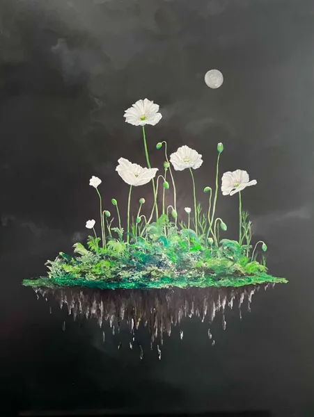
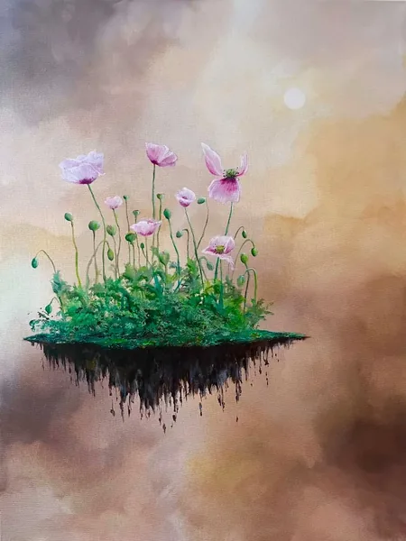
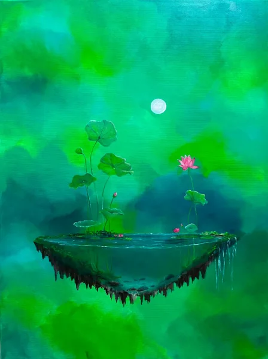
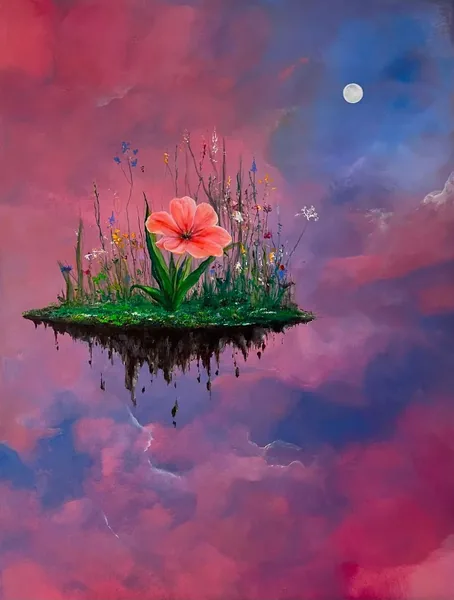
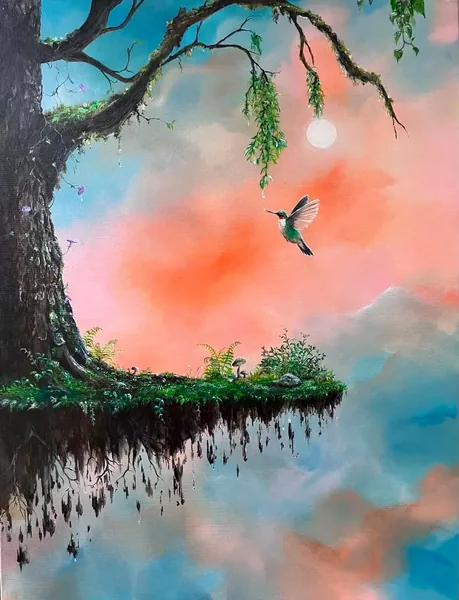

Light from photography
Rooted in my training as a photographer, I always work with light in my paintings. The direction of light, shaping light, and shadows are what bring depth into my work.
Welcome to my colorful universe. I paint acrylic on canvas with a special focus on light — memories of nature, calm in moments of unrest, and floating islands that live in my imagination.




I paint nature as I feel it, not only as I see it. Fragments of nature that live in my imagination.

“Efter Regnen”
I have always been creative — drawing and painting as far back as I can remember. I am a self-taught painter, yet I draw deeply on my understanding of light from my background and training as a photographer. Working with light is at the heart of every painting, because to me, light is what brings a canvas truly alive.
Beyond being creative, I am very much an outdoor person. I grew up by Bøllingsø west of Silkeborg, spent my youth in Silkeborg and Aarhus, and have always sought refuge in nature. I know firsthand how healing nature can be for human grief, pain, restlessness, and unease — so whenever I feel out of balance, nature is where I turn. In every painting you will find a quiet piece of myself: when I paint, I seek to evoke, share, and feel that very same calm.
I paint nature. Memories of the landscapes I grew up in near Silkeborg. The nature surrounding my home and studio in Lindenborg near Aalborg in Northern Jutland. Nature as I feel it, not only as I see it. Fragments of nature that live in my imagination.
Julie Kofod
Rooted in my training as a photographer, I always work with light in my paintings. The direction of light, shaping light, and shadows are what bring depth into my work.
Growing up by Bøllingsø, my youth in Silkeborg, and daily life in Lindenborg live in every brushstroke. I paint to evoke and share the quiet calm I find outdoors in Nordic nature.
Somewhere between reality and my imagination, my floating islands emerge. They illustrate fragments from my imagination, combining real nature with the surreal and impossible — aiming to capture the viewer, spark curiosity, and offer a pause from questioning whether the sky can hold a certain color or how water is supposed to look.
My current original works painted in acrylic on canvas. Click any painting for full-screen viewing, zoom, wall-scale preview, or inquiries.
A selection of my earlier acrylic paintings that have already found their homes. If a mood or color palette speaks to you, I would love to create a custom commissioned piece.
Interested in one of my paintings, a studio visit in Lindenborg near Aalborg (Denmark), international shipping, or a custom commission? Feel free to write or call — I would love to hear from you.